Act I: Setting Out – The Regal Road Trip Begins
No one in the kingdom of Sagar ever leaves for a road trip on time. Sagar stood at the door with a duffel bag in each hand, waiting for Heather’s third water-bottle check to finish.
Heather, radiant even with sleep in her eyes, checked lists, zipped coats, and did three rounds of “Does everyone have a water bottle?” Neet paced in anxious circles, suitcase already packed with his favorite blanket, two squeaky toys, and his official “I’m With Sagar” bandana. Buddy, sensing excitement, barked at the luggage, the door, his own tail, and then at the Keurig for good measure. The Keurig gurgled back. Buddy planted himself in front of it. Apparently there was time for one more argument.
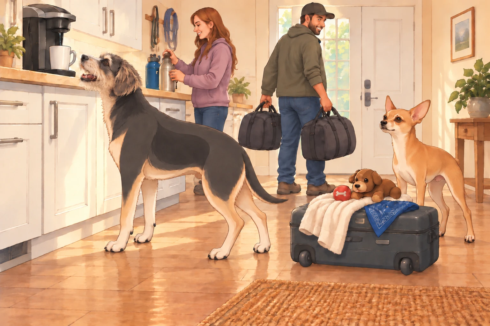
His own squeaky toy lay beside the luggage. Buddy picked it up, determined that whatever happened in the mountains, one familiar thing would come back with him. Neet already had two toys packed, but they were Neet’s toys and therefore subject to a complicated permission process.
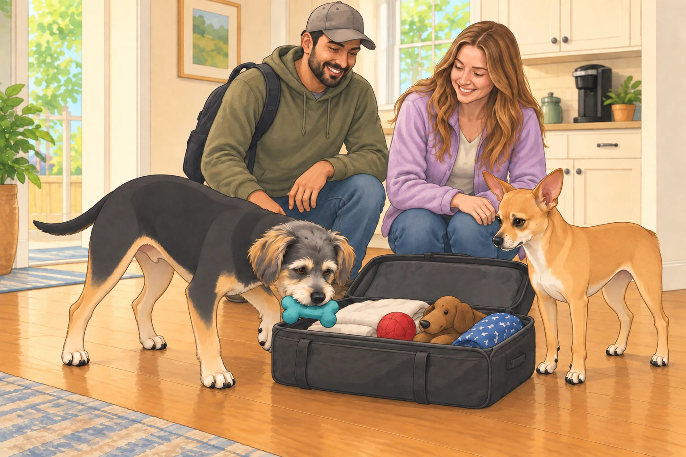
Buddy carried his to the car. It squeaked against the doorframe. He gave the Keurig one final look. “That’s how you answer.”
As Sagar loaded the royal chariot— his Subaru— Neet leaped in and claimed the window seat. Buddy insisted on sitting in the middle, his head resting on Sagar’s armrest, breathing heavily like a pug in a sauna.
Ten minutes down the road, Neet asked the existential question: “Are we there yet?”
Sagar, imperious as always, replied, “This is but the beginning, Sir Neet. Only the bravest reach the Smokies.”
Buddy farted loudly, and the journey was underway. Heather lowered her window. Neet lowered his opinion of the middle seat.
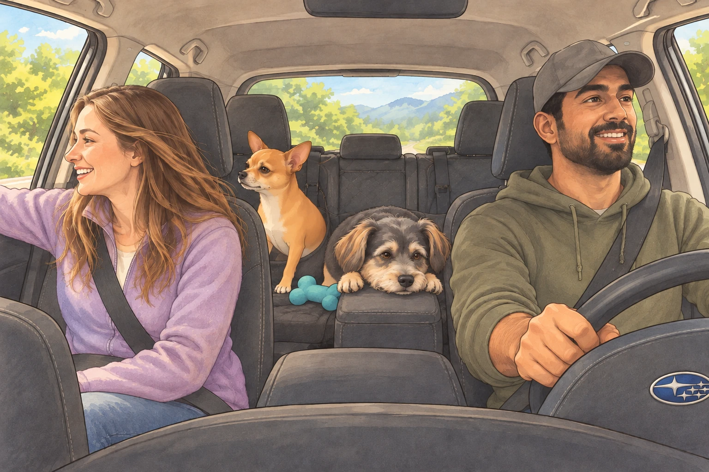
Act II: Arrival in Gatlinburg – Of Chairlifts and Crises
After navigating the labyrinth of Gatlinburg traffic— where tourists take left turns at the speed of evolution— they arrived at Anakista, the famed mountaintop park. Sagar, with a flourish, presented their golden ticket: The Chondola.
“An open-air chairlift!” Sagar announced. “We ascend to glory!”
Heather smiled, then blinked as she saw the “chair” in “chairlift.” There was nothing between her and the mountain except faith, a metal bar, and Sagar’s assurance.
Neet was quietly Googling “Chondola accidents” on Heather’s phone.
Buddy ran straight for the entrance, nearly toppling a sign that read, “Remain Seated At All Times.”
Heather steadied the sign, then held out a hand for his toy. Buddy backed up.
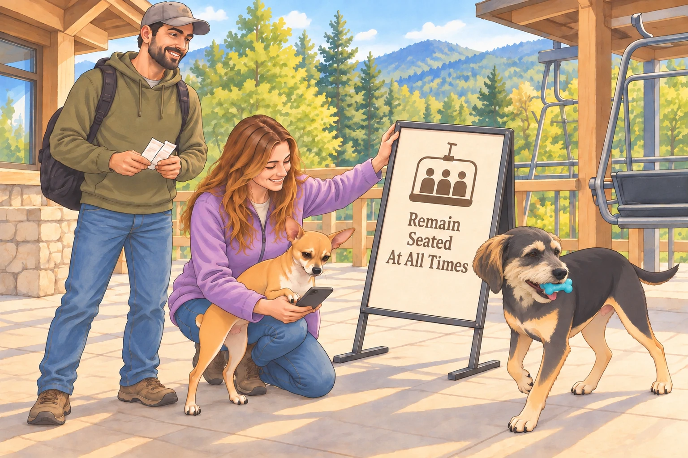
“You can have it when we’re off,” she said, opening the pocket of her coat. “I’ll keep it safe.”
He surrendered it reluctantly. The pocket swallowed everything except one soft corner. Buddy watched that corner with the attention Neet usually reserved for suspicious delivery drivers.
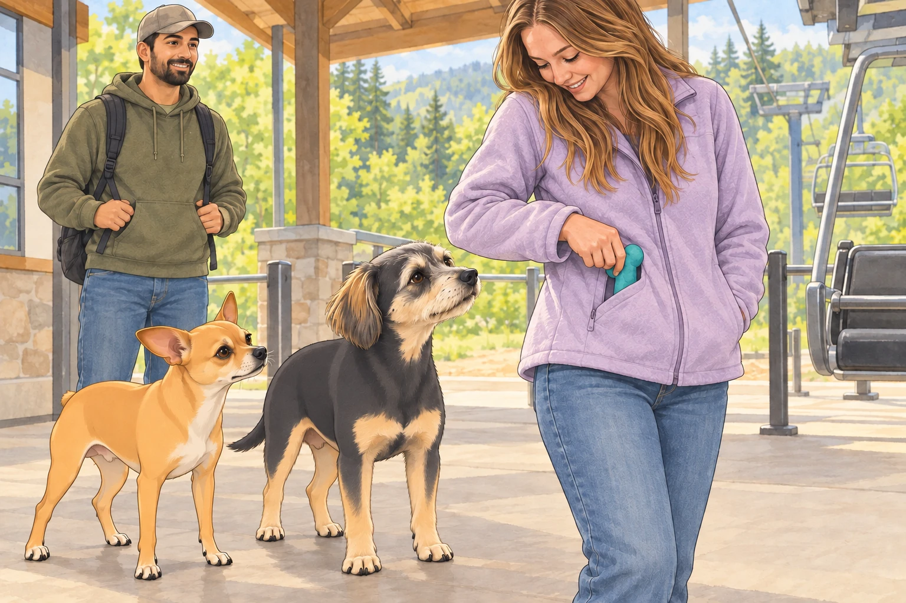
When their turn came, the attendant gestured to the swaying chair. Sagar stepped on, kingly and unflappable. Heather followed, keeping a firm grip on Sagar’s sleeve. Neet leaped up, fur standing on end, eyes wide, and nearly took Buddy’s ear off in his scramble.
As the Chondola lurched into the sky, Sagar pointed with command, “See, Heather, the endless Smoky peaks! Look, Buddy, a river! Neet, that’s the Appalachian Trail!”
Heather nodded mechanically. “Wow, honey, so pretty. So high up. So…open. When is the next station?”
Buddy, stuck in the middle, howled, “Sagar, what if I drop my toy? What if I drop myself?!”
Neet, pawing at Sagar’s knee, whispered, “I will never trust gravity again.”
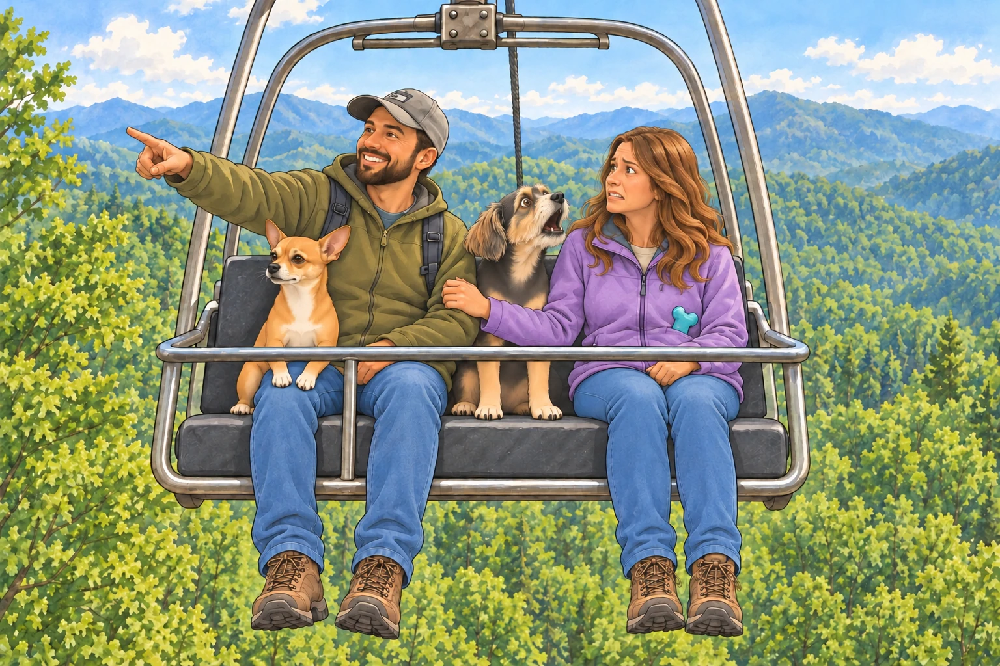
The Chondola creaked, swayed, and Sagar, a picture of composure, simply patted each companion’s shoulder. “Trust in me. We’re flying, together.”
For the rest of the ride, Sagar narrated points of interest while Heather stared at him, smile frozen, and Neet practiced breathing exercises. Buddy, realizing the air was full of squirrels and fresh possibilities, attempted to bark at clouds.
Then he remembered the toy and checked Heather’s pocket. Still there. The river was much farther away now, and he felt newly respectful of pockets.
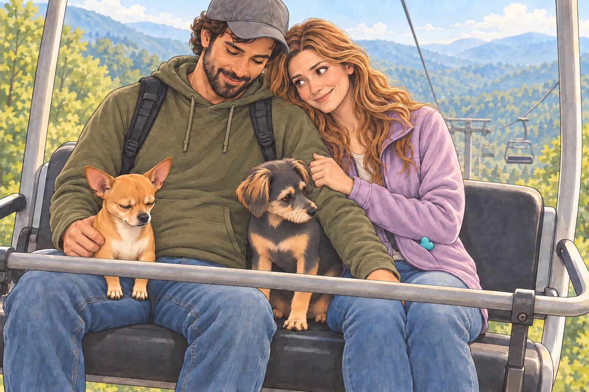
When they finally reached the top, Heather kissed Sagar’s hand in relief. “You’re my hero.” Neet collapsed onto the platform, face first, for dramatic effect. Buddy just shook and peed on the nearest trash can.
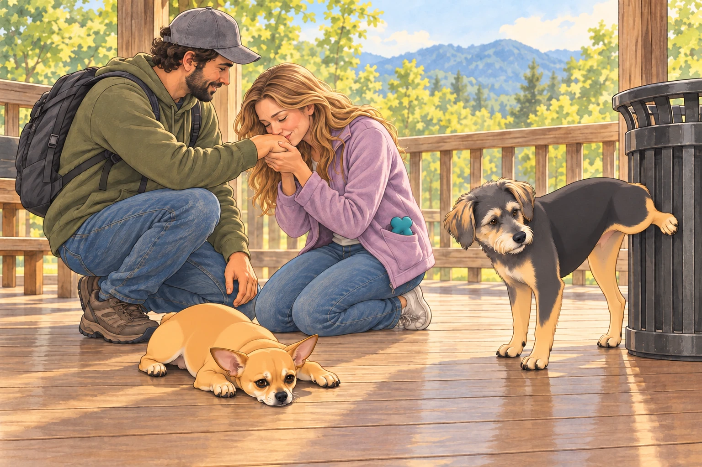
Act III: Tree Bridge Walk – The Highwire Family
Next up: The legendary tree bridge walk— a 40-foot-high series of rope and plank bridges strung between ancient oaks. Sagar, with noble stride, led the way. Buddy rushed ahead and immediately began bouncing the bridge, convinced he was on a bouncy castle.
Neet inched forward, side-eyeing every knot. “This is not up to code,” he muttered. Heather gripped the rope with white knuckles and followed Sagar one plank at a time.
Halfway across, the bridge rocked violently as a child sprinted by. Neet froze mid-plank. “Go on without me,” he gasped.
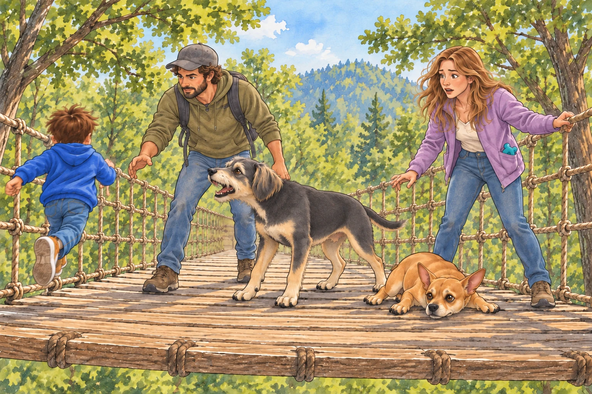
Buddy barked encouragement. “Come on, Neet! Pretend there’s pizza on the other side!”
Neet lifted one paw. “Is there?”
Buddy looked toward the far platform. He had meant to help. Now he wanted to know too.
He started toward the supposed pizza, bounced once, and saw Neet flatten against the planks again. Buddy’s ears sank. He had made it worse.
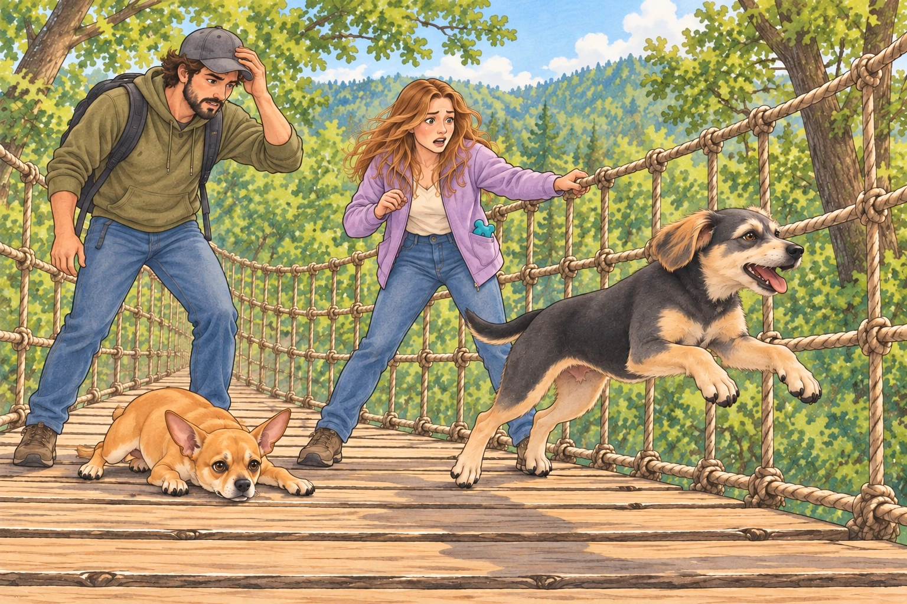
“There may not be pizza,” he admitted.
Neet stared at him.
“I didn’t check.”
Buddy sat down. The bridge steadied around his paws. He would stay right here until Neet could move, even if a pizza did somehow appear on the far platform. He glanced that way once more, just in case.
Sagar knelt, met Neet’s gaze, and gently said, “Look, there’s a sunbeam over there just for you. You’re safe. With me.”
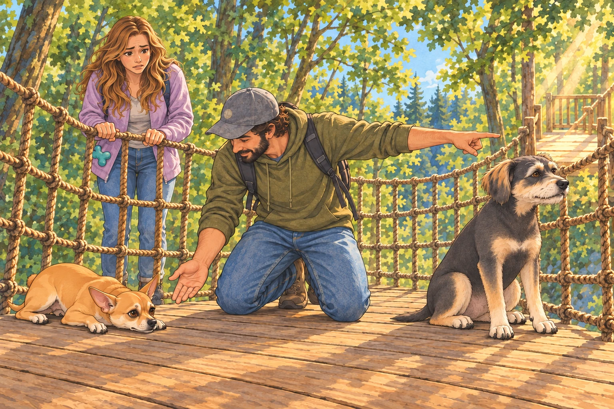
With a shuddering sigh and full faith in his king, Neet completed the bridge, then strutted for the camera like he’d summited Everest. Heather, once across, hugged Sagar and whispered, “You make everything less scary.”
Buddy received his toy back on the solid platform. He pressed it once, gently. Neet flinched.
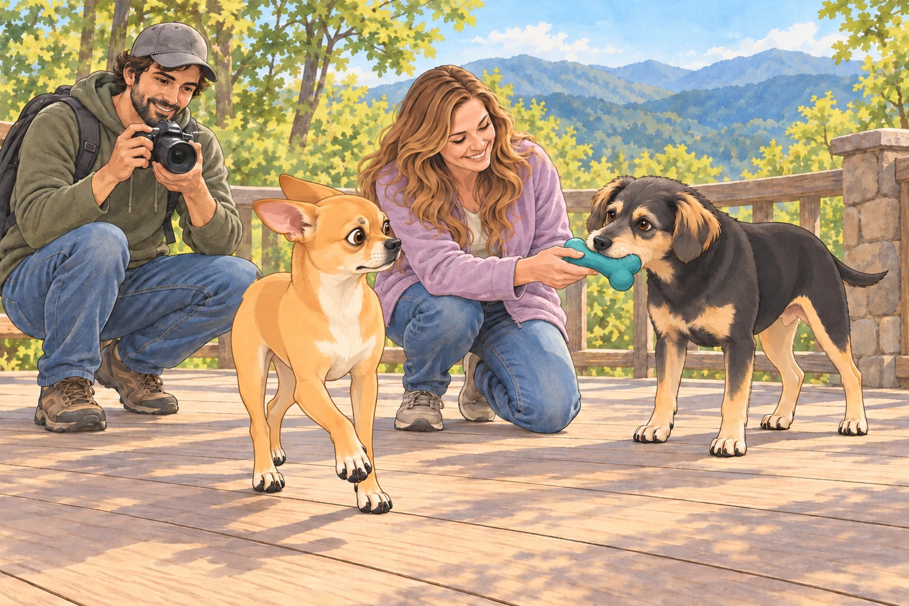
“Sorry,” Buddy said, and carried it without another squeak until lunch.
Act IV: The Hellbender – Brakes Are For Mortals
Lunch was a blur— turkey sandwiches for the humans, chicken snacks for the canines. Heather tucked Buddy’s toy back in her pocket for the ride. Then: the Hellbender mountain coaster.
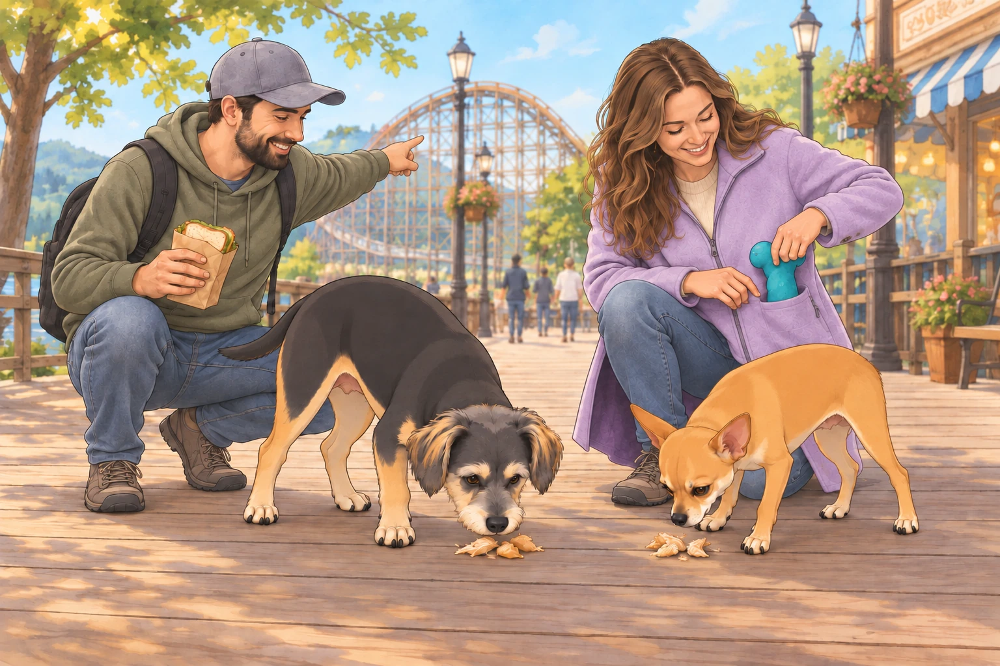
Four to a cart, Sagar up front. The operator eyed Sagar. “Sir, the brakes are in your hands.”
Sagar smiled. “I was born ready.”
Heather, climbing in, gripped Sagar’s shoulder and said, “If you value our marriage, remember: brakes exist for a reason.”
Neet wedged in behind Heather, eyes closed, mumbling a quiet prayer. Buddy bounced in, vibrating like a phone in a blender.
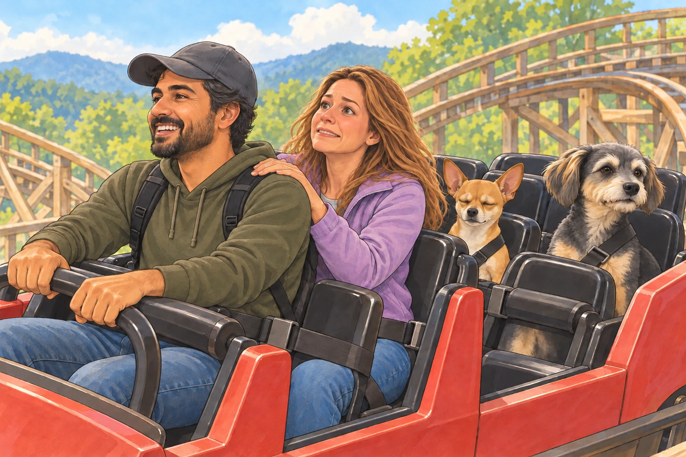
The ride began. Sagar tested the brakes— a little. Then less. Then not at all.
The cart launched down the mountain, zig-zagging through trees and whooshing over dips. Heather shouted, “Sagar Patel! Brake! Brake! BRAKE!!”
But soon, her shrieks turned to laughter and shrieking joy.
“SAGAR PATEL! FASTER! OKAY, MAYBE SLOWER! NO, FASTER!”
Neet howled along, ears back, wild with terror and exhilaration.
Buddy, tail a blur, screamed, “WHEEEEEEEEEE!”
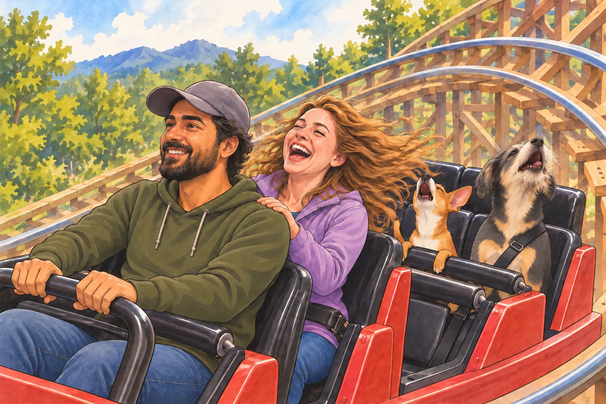
By the time they rolled into the station, all four had hair standing on end. Heather’s mascara was halfway down her cheeks. She turned and kissed Sagar. “That was insane. I’d do it again— after my legs work.”
Neet staggered out, legs wobbly, collapsed in Sagar’s lap, and licked his face, certain Sagar had saved them all.
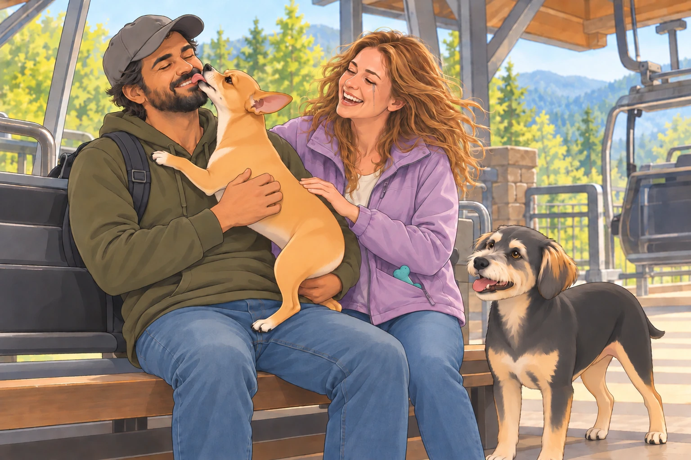
Act V: Astralumina & Storm – Chaos in the Cosmos
As dusk fell, the family entered Astralumina: a forested path of glowing cosmic lights, projection shows, and swirling music.
Buddy tried to chase a projected comet and nearly ran into a group of schoolchildren. He stopped, backed out of their way, and picked up his toy where he had dropped it to give pursuit. A small child waved. Buddy returned a muffled woof, declining to make any promises about the next comet. Heather and Sagar held hands, marveling at the twinkling stars and drifting planets overhead. Neet kept looking for a place to hide— cosmic beauty was nice, but not when your last nerves were already fried.
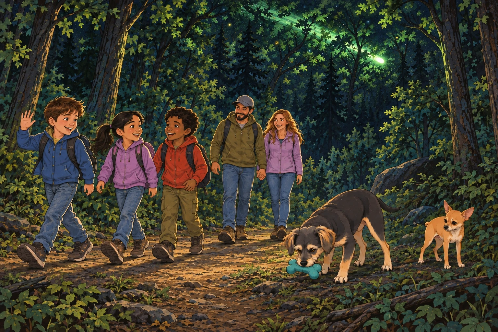
Suddenly, the wind picked up. Thunder rumbled. A PA system announced, “A storm is approaching. Please evacuate the park.”
Sagar seized command. “Team! This way! Follow me— run!”
Buddy and Neet sprinted, Sagar in the lead, Heather close behind.
The toy slipped from Buddy’s mouth onto the wet path. He turned back, then saw Neet hesitate at a puddle shining with reflected lights. Buddy’s feet shuffled between two directions. That was his toy. It had come all this way.
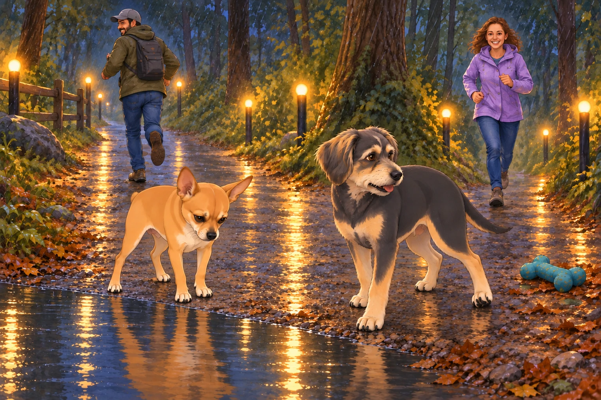
He went to Neet instead and splashed through the shallow edge, showing him where to cross. Neet followed so close that they nearly collided.
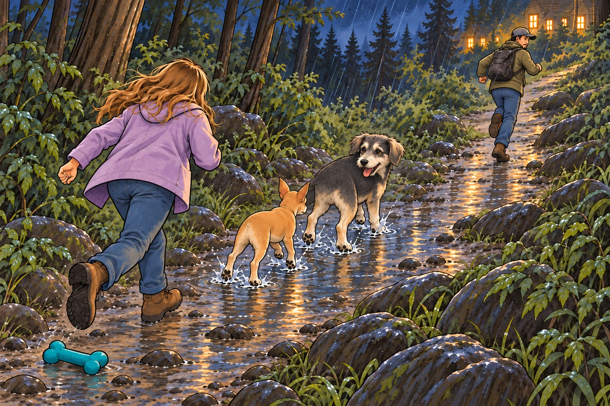
Heather saw the abandoned toy as she caught up. She scooped it into her coat without stopping. By the shuttle steps Buddy was still checking behind them; she touched his shoulder and showed him the familiar corner above her pocket.
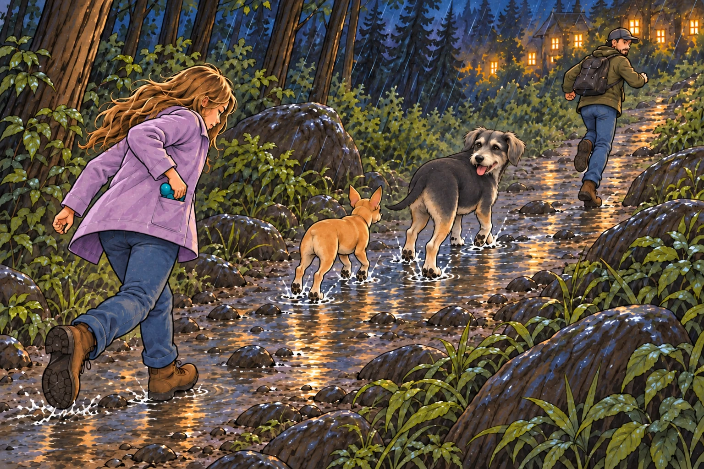
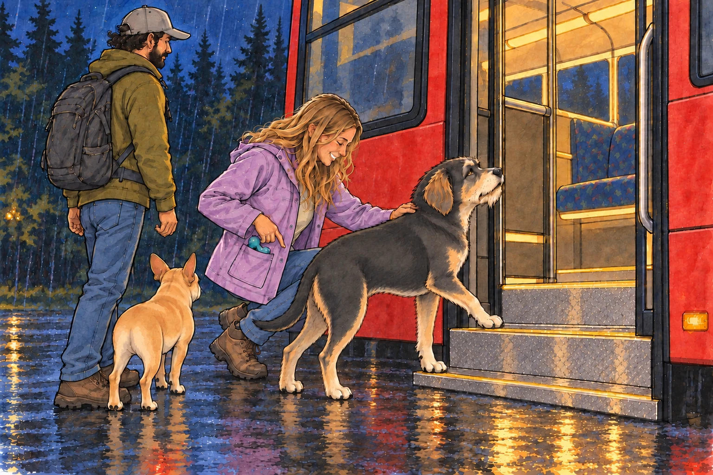
He climbed aboard at once. The others followed as lightning flashed, rain splattering the windows the instant the doors closed. All four collapsed onto a seat, panting and laughing.
Heather panted, “We made it. And we are taking this bus down.”
Neet stared at Sagar in awe. “If you asked, I’d climb another Chondola.”
Act VI: Pizza, Bears, and Buddy’s Parking Lot Showdown
Rain still pouring, Sagar pulled the car up to a pizza shop. He dashed through puddles, returned with a piping hot pizza. Heather claimed shotgun, shivering with Buddy wrapped in a towel. Neet sat in the back, sniffing the air, already recovering his royal composure.
On the drive back to the hotel, headlights caught a shadow in a nearby parking lot— a black bear, lumbering near a dumpster. Sagar slowed. Heather gasped. Buddy pressed his nose to the glass.
Neet— suddenly bold with glass between him and the bear— began barking:
“No loitering! No trespassing! Get a job!”
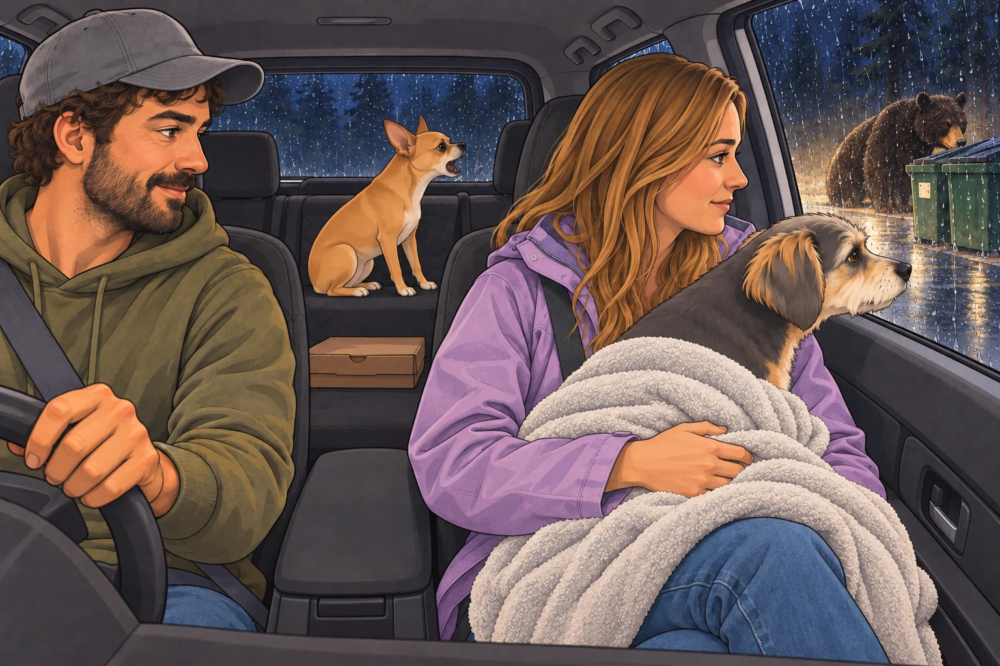
The bear glanced at the car, rolled his eyes, and went back to the dumpster.
Buddy barked in solidarity: “Yeah, you heard the man!”
Pizza was devoured in the hotel, slices disappearing faster than Neet could count. Buddy tried to stash a crust for later but Sagar gently reclaimed it with a smile. Buddy kept his nose pressed to the empty hiding place for another moment.
Then he checked Sagar’s hand, in case the crust had merely been relocated.
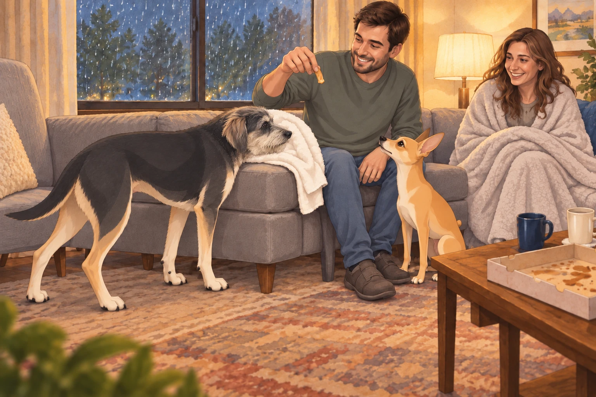
Heather put his dried toy on the towel beside her. Buddy tried tucking that under the edge instead. He looked at Sagar, waiting for another confiscation.
“That one’s yours,” Sagar said.
Buddy flattened the towel with both paws, made a hollow for the toy, then settled beside it. His stash was finally legal. Neet sniffed the hollow.
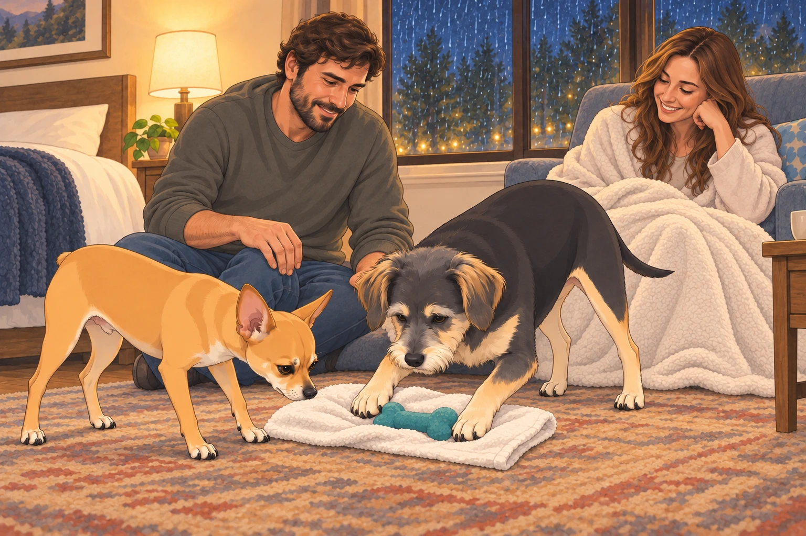
“No,” Buddy told him. “You have two.”
Heather, wrapped in a blanket, whispered, “Is this happiness? I think this is happiness.”
Neet curled at Sagar’s feet, Buddy at Heather’s. The rain drummed gently, and the world felt invincible.
Act VII: Kate’s Cove and the Wildlife Opera
The next morning, with coffee and dog biscuits in hand, they set out for Kate’s Cove. Buddy’s toy rode beside him on the seat. The winding road shimmered with dew and promise.
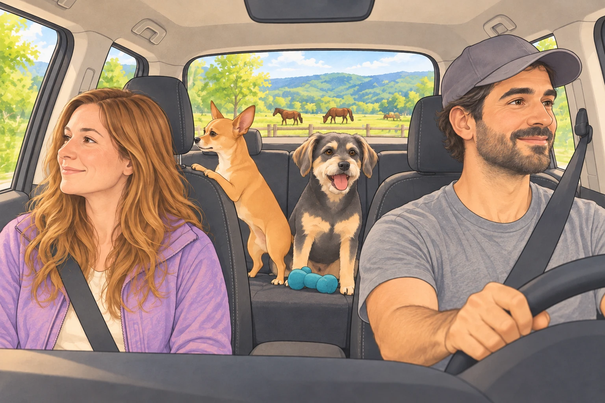
Neet pressed his face to the window, scanning for bears. Buddy looked for squirrels. Sagar narrated, “Here is where the Cherokee once roamed. There, wild horses still run free.”
In the cove, horses grazed on distant hills. Buddy barked, “They’re just big dogs!” Neet corrected him: “They’re horses, you uncultured twit.”
Buddy watched one crop a mouthful of grass. “Very big dogs.”
A flock of turkeys strutted across the road. Neet began a high-pitched barking tirade that sent the turkeys scattering. Buddy joined in, woofing at deer in the meadows, at crows on fenceposts, and at clouds that looked vaguely suspicious.
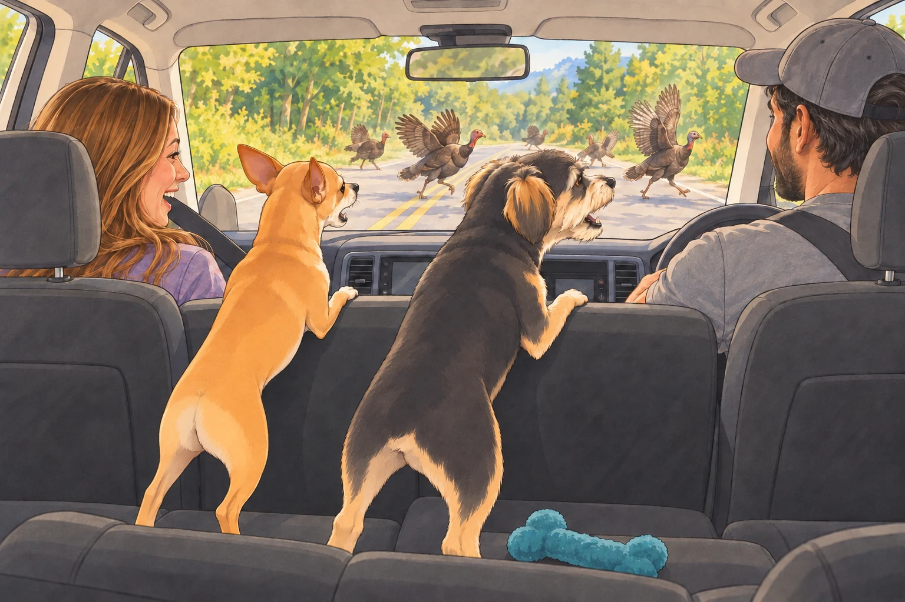
At every overlook, Heather took photos, Sagar recited mountain facts, and Neet and Buddy staged barking competitions.
At a scenic pull-off, Sagar tried to take a photograph of Heather. Neet and Buddy supplied the soundtrack by barking at a passing cyclist.
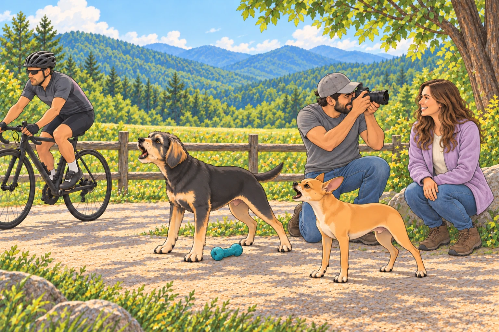
Act VIII: Chattanooga— Memory Lane
On the way home, Sagar surprised everyone with a stop in Chattanooga. Heather led the family on a tour of her old haunts— the park, the path by the river, the bakery where she bought Neet’s first treat.
Neet sniffed at an old oak and circled it, then lay down with a sigh, remembering simpler days. Buddy rolled in the grass, delighted at every familiar smell. At the mention of the bakery, Neet rose at once. His nostalgia had opening hours.
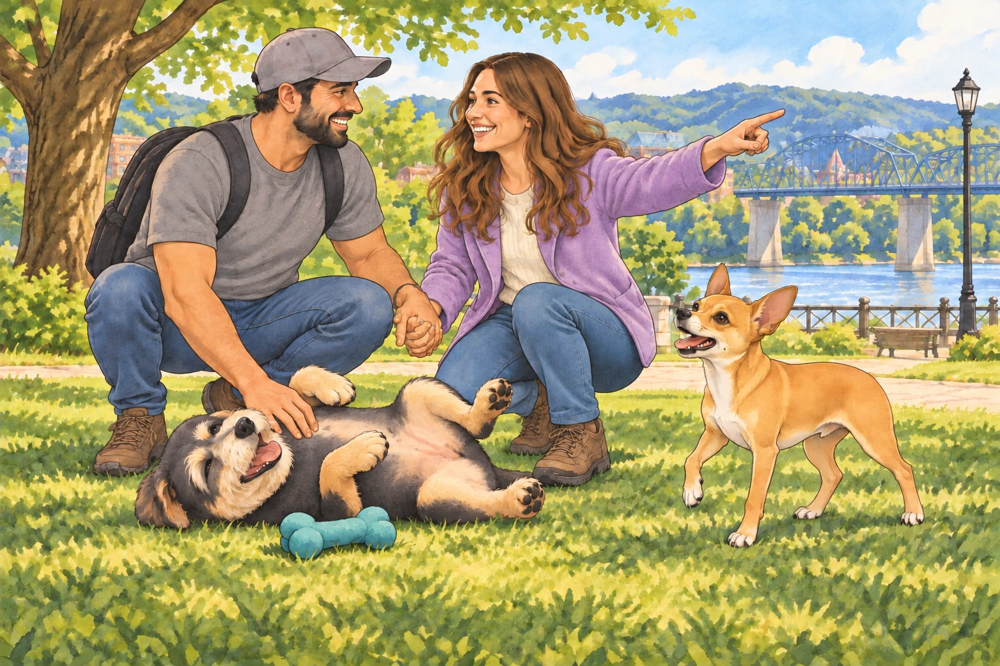
Buddy picked up his toy and headed toward the river, where a duck bobbed near the path. He paused before the slope. Last time, the ducks had moved farther away just as the ground ran out.
He set the toy down well back from the water and watched instead. Heather knelt beside him, resting a hand lightly between his ears. The duck paddled past. Buddy neither barked nor followed.
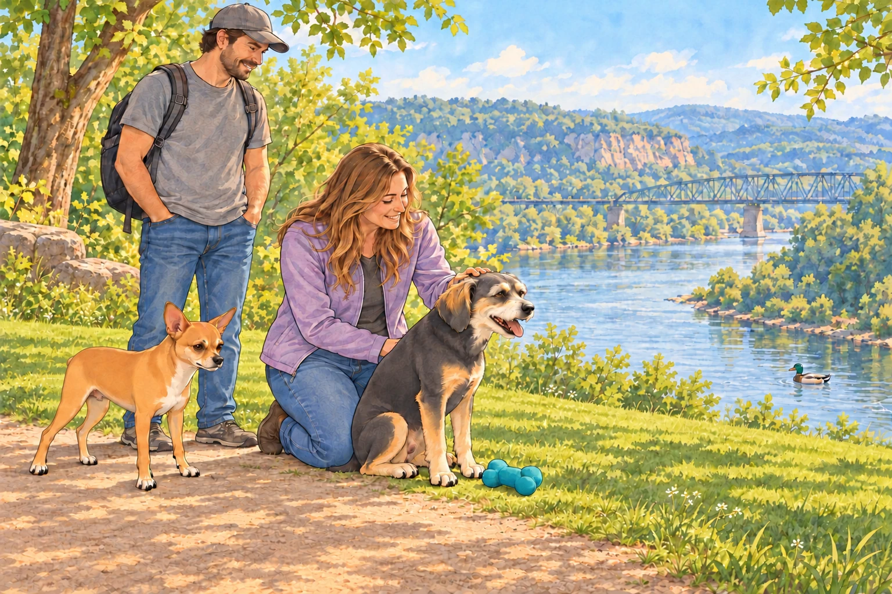
“Much better introduction,” Heather murmured.
Buddy collected his toy. The duck could find its own.
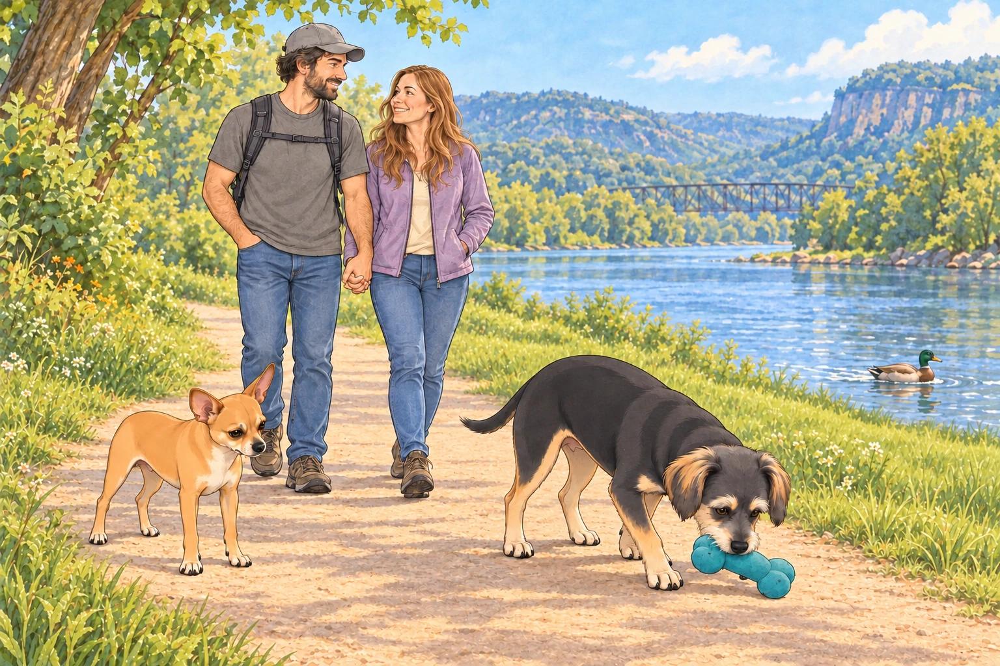
Heather told Sagar stories: of long walks, thunderstorm cuddles, and of Buddy’s failed attempt to become friends with ducks. Sagar listened, hand in Heather’s, and Neet’s heart swelled with nostalgia.
Act IX: The Royal Return
As dusk settled, the Subaru headed home, every seat filled with exhaustion and contentment. Buddy and Neet slept, bellies full, dreams loud and wild. Buddy’s toy rested beneath his chin. When a bump made it squeak, Neet opened one eye; Buddy shifted his chin and the car was quiet again.
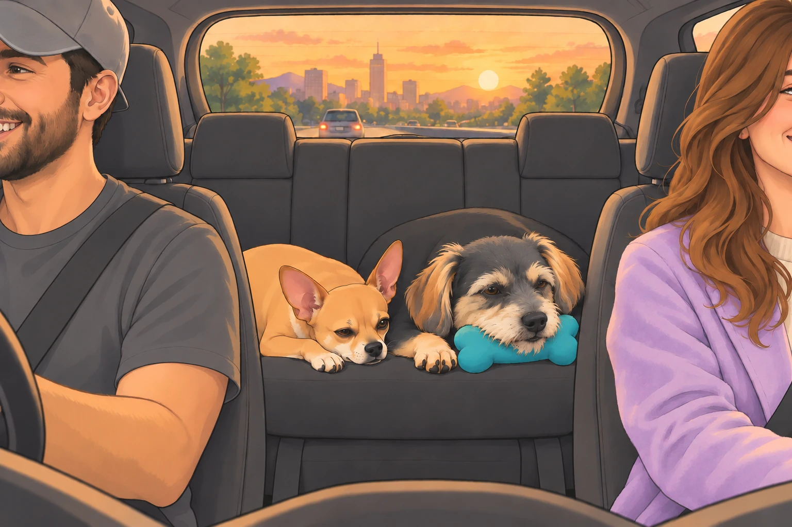
Heather leaned into Sagar. “You always make it an adventure.”
Sagar smiled, kissed her hair, and turned for home— where new stories, and new chaos, always awaited.
And so the greatest trip yet passed into legend, and the Chronicles continued…